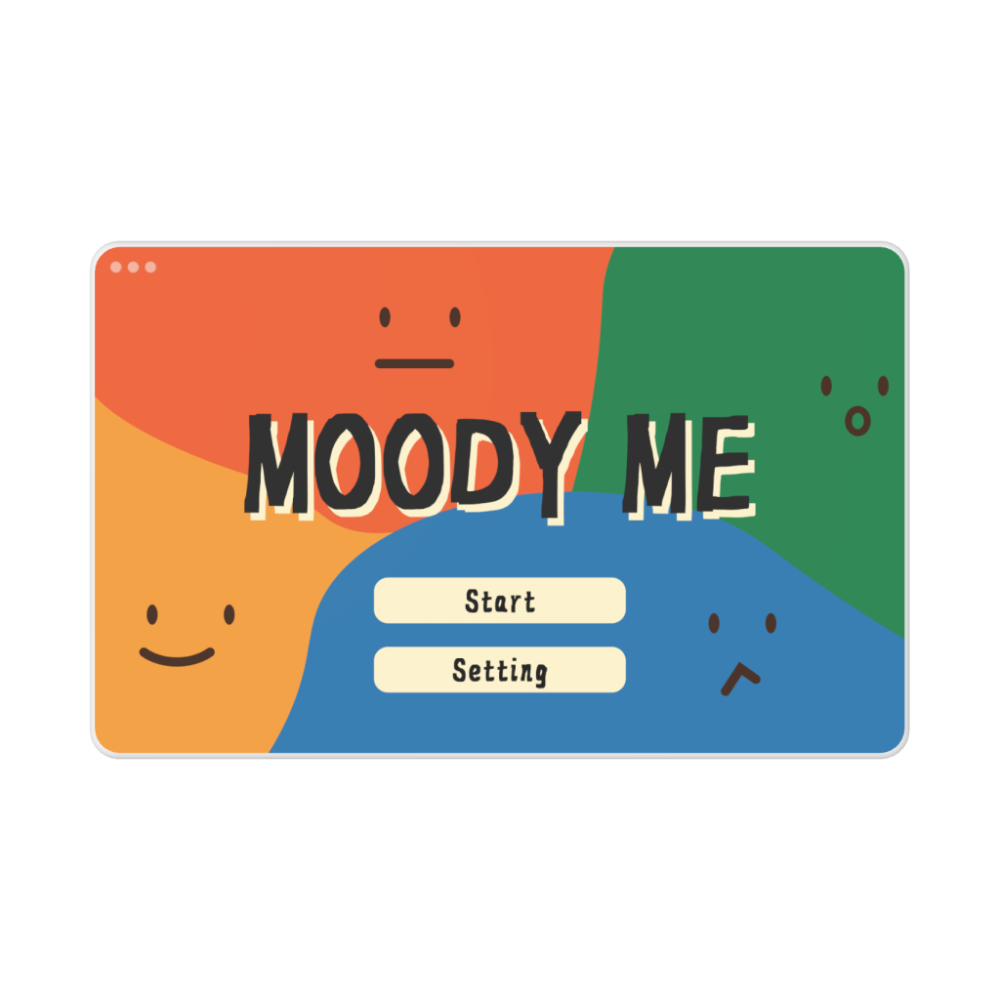
2D Artist
Developer
48 hours
Yan Wen (2D artist)
Adobe Illustrator, Photoshop
Figma
Overview
Introduction
MoodyME transfers a inferiority complex quiz into an interactive story, using mood as the way of making choices. The questions and test results are revealed along a storyline.
The interactive story is about a narrator's daily life in family, school and work. Each choice will come with a different ending. Players will use their facial expression to choose the narrator's life.
Problem
Under high pressure, young people are unware of their mental health problems or afraid to tell to avoid possible discrimination. Inferority complex is one of the issues that is often ignored.
Goal
Create an interactive experience to allow users to go through the mental health test that reflect their true thoughts and feelings
SOLUTION
Final Outcome
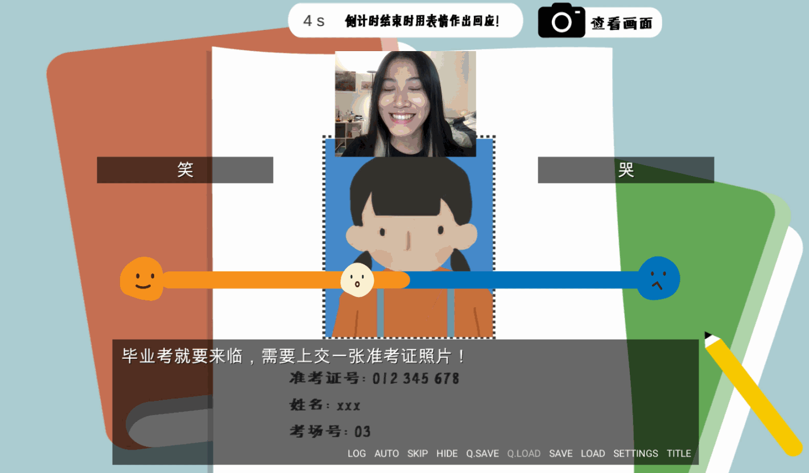
1. Gamefication of taking quizzes
- Turn hand written multiple choices into an interactive experience
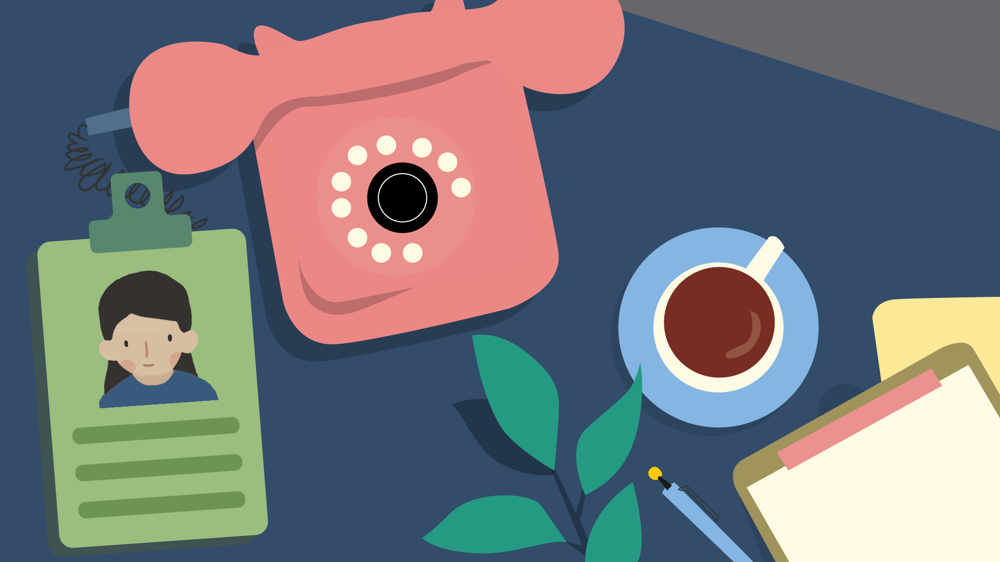
2. Engaging storytelling and connection to reality
- A story about a person's life from birth to college graduation
- Paraphrase abstract quiz questions into choices under real scenarios
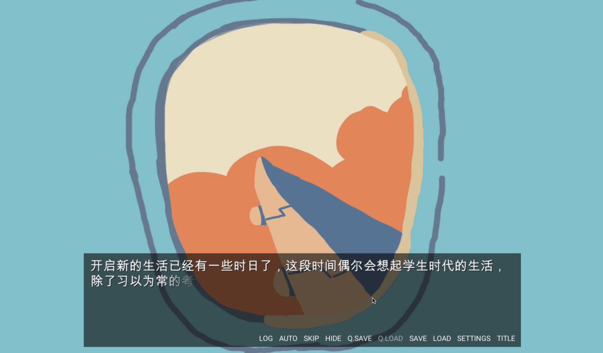
3. Test result included in storytelling
- The test is conducted by scoring the choices
- Take pictures along the storyline and receive them at the end as a letter with the test result
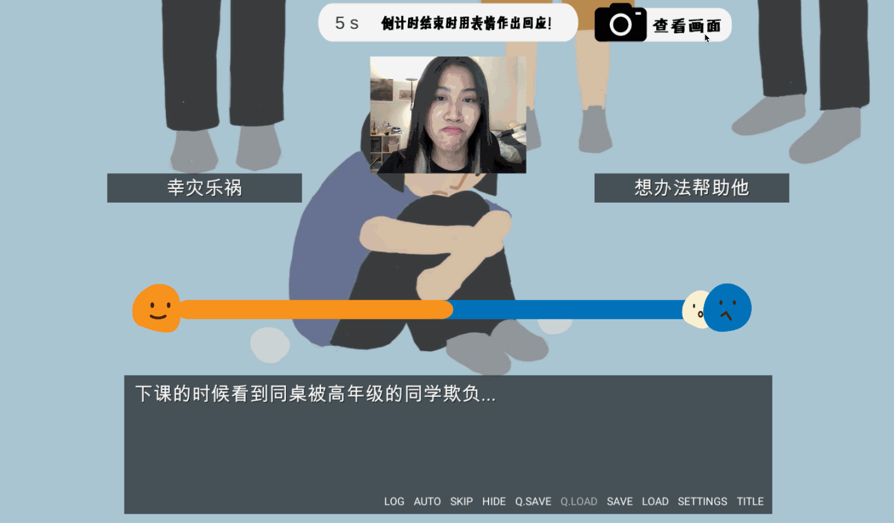
4. Natural selection through facial expression
- Build empathy with the main character ME and make life choices by showing attitude through face and emotions
Design Research
Inspiration
Mental health problem received much attention during and after the pandemic. Emotional problem such as anxiety and depression may lead to severe physical health issues if not treated in early stage. I decide to narrow the problem through online research.
Secondary Research
Research Objective
Determine the types of mental health issue that affect people's daily life, how questionnaires play a role in mental health treatment and research.
Collect and Analyze Data
I collected data from research and reports to gain insight about different types of mental health issues.
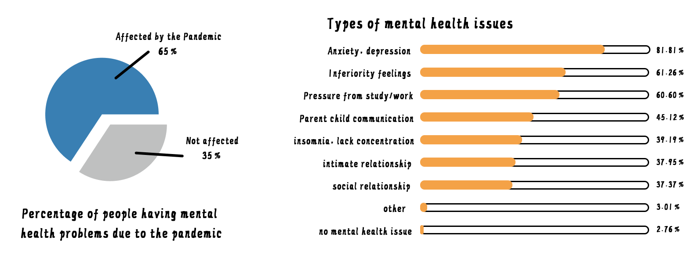
Comparing data from 2016 to 2021, the pandemic was an important factor that turn public attention from the high pressure working environment to individual growth. More than 60% of the users experience issues about personal growth, which is the second common mental health distress after anxiety.
Data from Public Mental Health Insight Annal Report 2021-2022 published by MyTherapist.
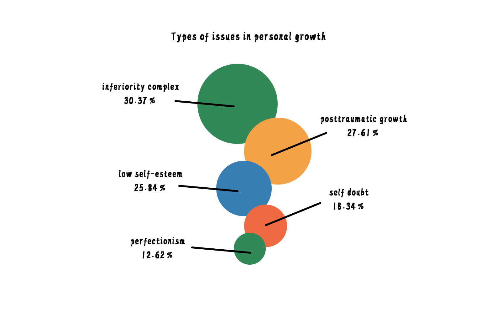
In one report, researchers conducted a surevy among 1000+ samples and reached a conclusion that 92.37% of the college students believed they did not suffer from any mental health problems. However, they found immediately that there is bias within the research method. They chose to dissaminate paper questionnaires in person and this resulted in problems that mostly students who are more outgoing would like to be interviewed and took the survey. To reduce possible conditional factors, the researchers changed their method to online survey and enlarge the sample size.
Synthesize Research & Observation
Mental health self-assessment
In middle schools, students are often askes to fill in questionnares about their mental health state. However, it is not effective to help detect real mental health problems. Students would rather hide themselves from being punished by teachers or parents. Some would believe mental breakdown is common and do not take it seriously.
On the other hand, young people enjoy doing online self-assessment quizes such as MBTI, personalities tests to gain insights about themselves.
Detect inferiority complex
Inferiority feeling is the second common issue appear in daily life, while it does not gain much attention as anxiety and depression. It is probably that inferiority complex is hidden due to the inferiority feeling itself.
"How might we create a mental health test experience that bring attention to the issue of inferority complex?"
IDEATION
Design Goal
1. Add fun of taking a mental health text
2. Encourage users to react according to their true feelings
User Flow
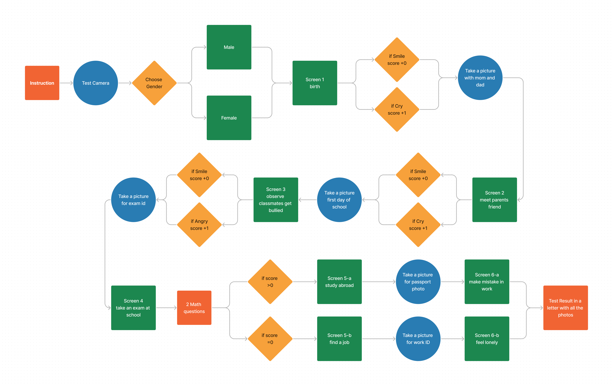
DEsign
Wireframes
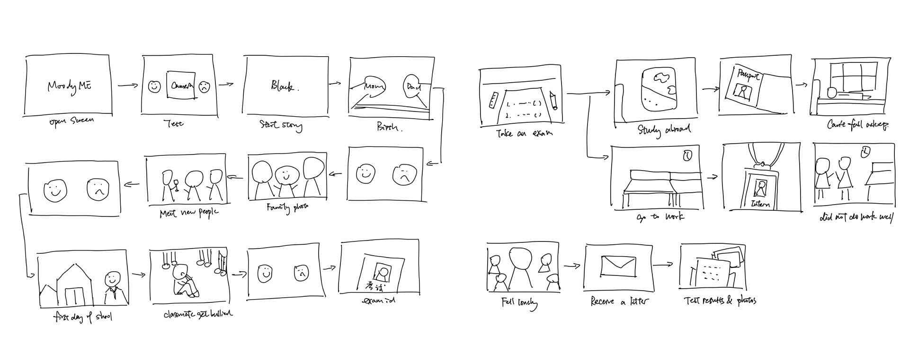
Color and Typography
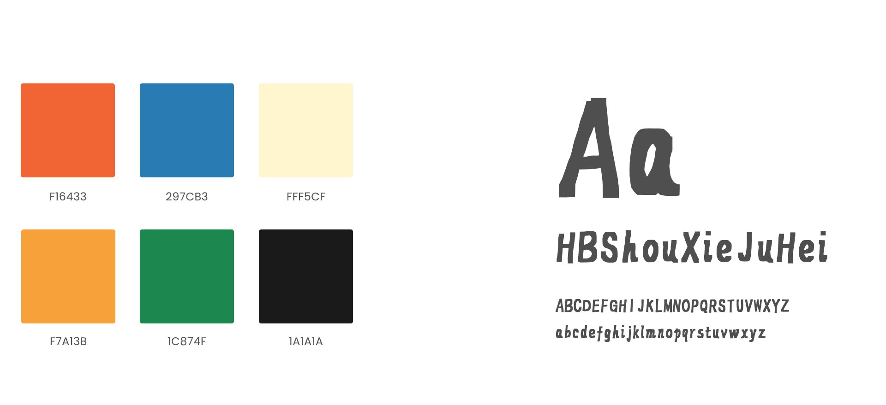
Illustrations
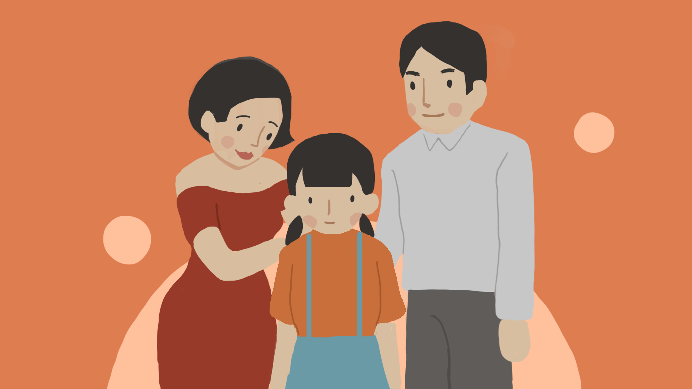
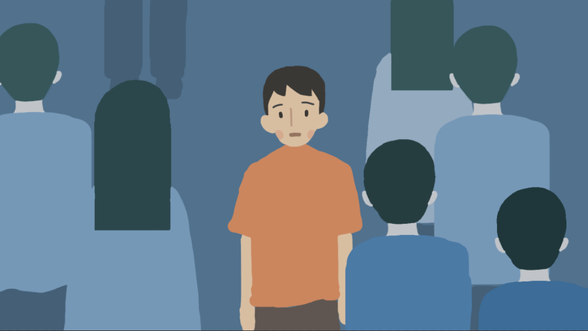
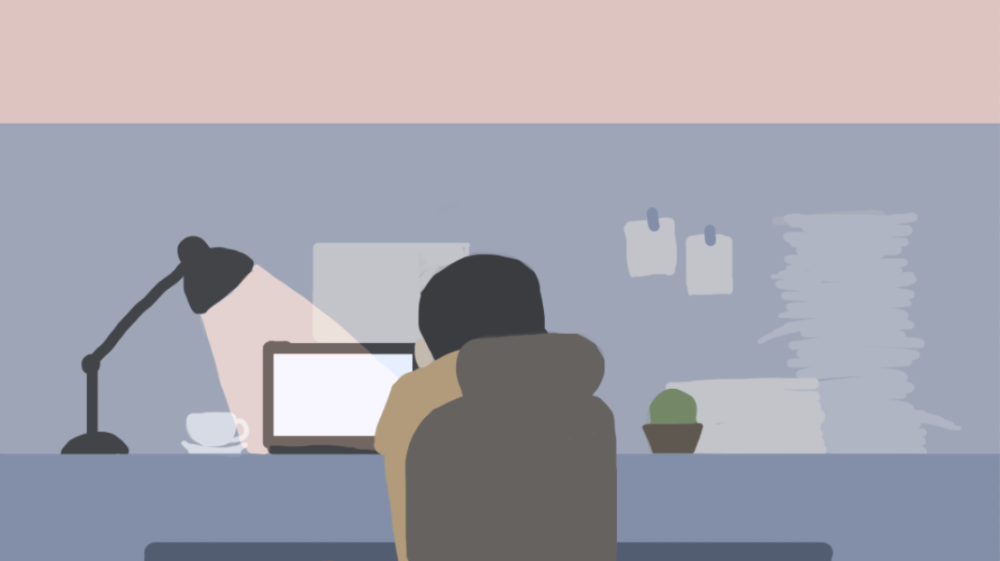
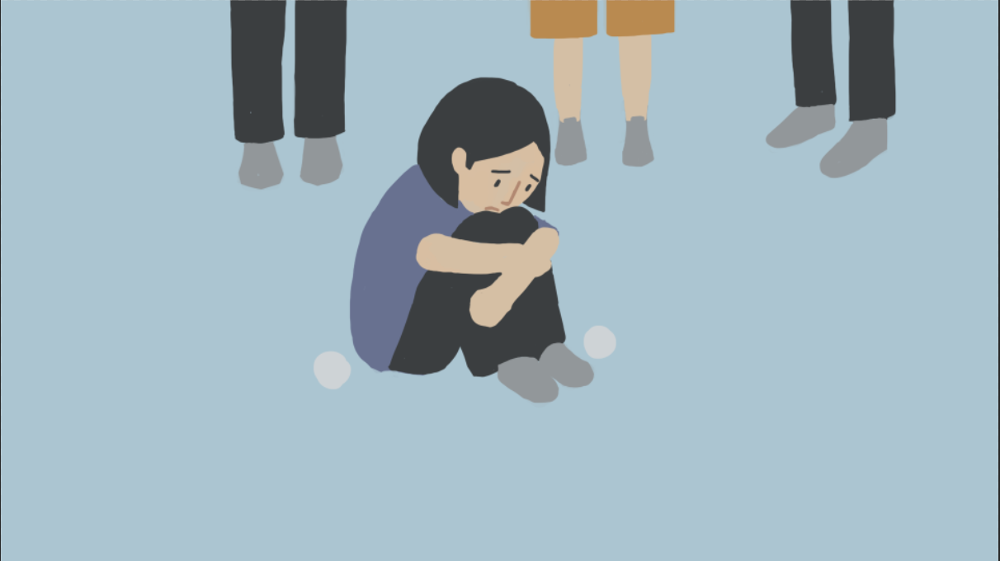
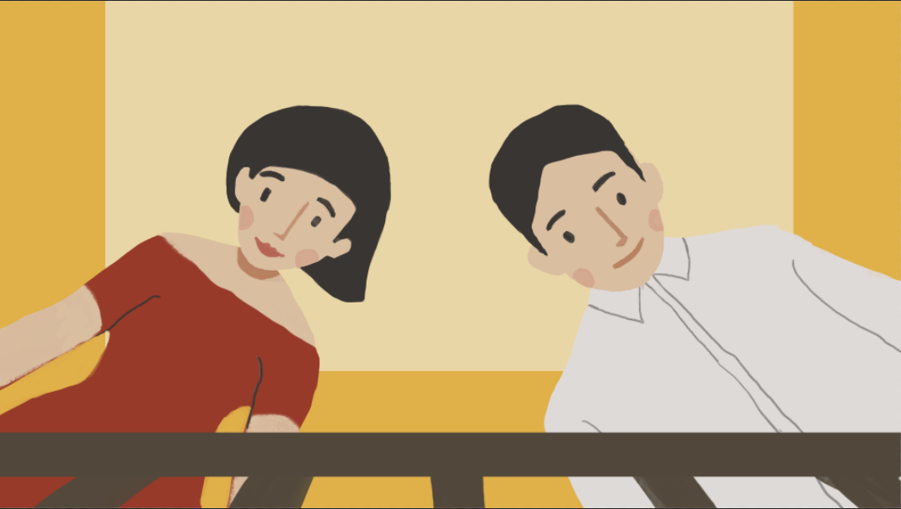
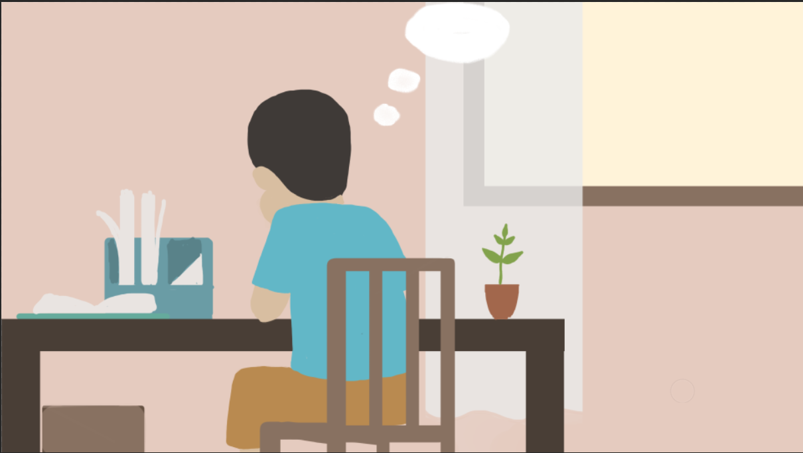
Final Design
Refection
What I Learned from the Experience
Project management and understanding different roles in a team
I proposed the idea and led the team with a developer and an artist. I also coded and drew some parts myself. This experience helped me to better understand each role in a team and how to work together with effective communication and empathy.